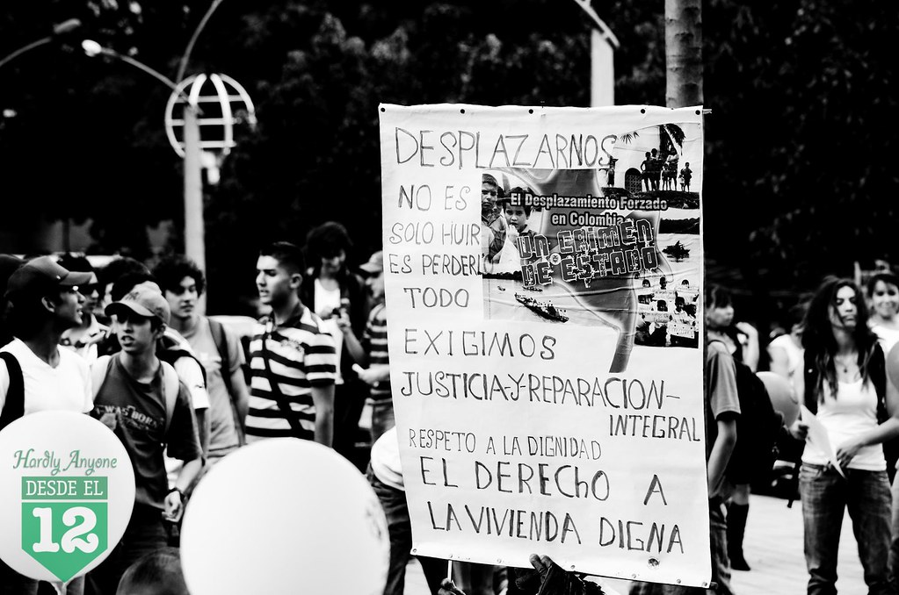
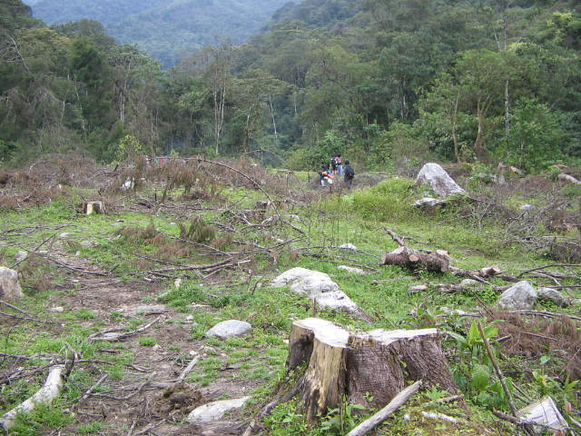

En el marco del conflicto armado interno colombiano, las violaciones de derechos humanos y las infracciones al Derecho Internacional Humanitario (DIH) se expresaron en diferentes hechos victimizantes. Estos hechos producen daños físicos, psicológicos, familiares, sociales, económicos, culturales y territoriales.
Hechos victimizantes (Ley 1448 de 2011):
Identifica cuál de las siguientes opciones NO está catalogada en la lista anterior como un hecho victimizante del conflicto.
Según el Registro Único de Víctimas (RUV), con corte al 1 de abril de 2026, Colombia registra:
...lo que equivale aproximadamente al 19,15 % de la población nacional.
Utiliza tus conocimientos para completar los vacíos de la definición actual de víctima en Colombia:
Da click en cada espacio [...] para completarloDe acuerdo con la Ley , que actualizó la Ley 1448 de 2011, se consideran víctimas las personas que sufrieron daños por hechos ocurridos desde el . Este reconocimiento incluye afectaciones por violaciones a los Derechos Humanos, infracciones al , y delitos contra los recursos naturales y el .
¿A quiénes incluye específicamente este reconocimiento? (Selecciona todas las que apliquen)

El desplazamiento forzado transformó profundamente la vida de millones de personas, alterando sus vínculos familiares, comunitarios y territoriales.
El conflicto armado produjo una profunda afectación sobre la vida cotidiana, las familias, las comunidades y el tejido social. El desplazamiento forzado es el hecho victimizante más registrado: el RUV reporta 9.115.103 víctimas de desplazamiento forzado. También registra 1.157.031 víctimas por homicidio, 846.697 por amenaza, 228.670 por confinamiento y 208.849 por desaparición forzada.
Comisión de la Verdad: entre 1985 y 2018 hubo 450.664 personas que perdieron la vida a causa del conflicto armado. Considerando el subregistro, el universo de víctimas mortales podría llegar a 800.000.
Desaparición forzada: 121.768 víctimas entre 1985 y 2016.
Secuestro: 50.770 víctimas entre 1990 y 2018.
JEP: 18.677 casos de reclutamiento de niñas, niños y adolescentes entre 1996 y 2016.
La Comisión de la Verdad subraya que las experiencias de víctimas y sobrevivientes permiten comprender no solo el sufrimiento causado por la guerra, sino también sus procesos de resistencia y reconstrucción de la vida.
Diversas fuentes (RUV, Comisión de la Verdad, JEP) documentaron el horror en el texto anterior. Selecciona a qué hecho victimizante corresponde cada dato revelado.
Da click en cada menu desplegable para completarloLas cifras muestran la magnitud del conflicto, pero cada número representa personas, familias y comunidades que vieron alterada su vida cotidiana.
El conflicto armado también produjo pérdidas económicas profundas, especialmente en zonas rurales. El RUV registra 142.438 víctimas por pérdida de bienes muebles o inmuebles y 49.419 víctimas por abandono o despojo forzado de tierras.
Entre 1985 y 2013 más de 537.503 familias fueron despojadas de sus tierras o tuvieron que abandonarlas forzadamente.
Entre 1995 y 2004 se reportaron más de 8 millones de hectáreas despojadas o abandonadas.
Lee las opciones de los menús desplegables y reconstruye la relación de causa y efecto del impacto económico del conflicto.
Los atentados contra oleoductos no solo afectaron la economía nacional; también causaron daños ambientales severos. Los derrames de crudo contaminaron suelos y fuentes hídricas, alteraron ecosistemas y afectaron la seguridad alimentaria de comunidades rurales.
Desde una mirada actual, estos daños pueden analizarse como expresiones de ecocidio, entendido como la destrucción masiva, grave y sistemática de ecosistemas.
Lee la siguiente afirmación que intenta resumir el impacto descrito sobre los ataques al oleoducto. Haz clic sobre la frase o segmento que vuelve FALSA la afirmación legal y técnica.

La siembra de coca en Colombia se relaciona con economías ilegales, control territorial de grupos armados, afectación a comunidades rurales y presión sobre ecosistemas estratégicos.
Cifras clave:
Alinea el hecho documentado con el tipo de impacto cultural y territorial que genera en las comunidades:
Da click en cada menu desplegable para completarloUna comunidad puede reconstruir viviendas, caminos o cultivos, pero recuperar memorias, prácticas culturales y formas de vida puede tomar generaciones.
La masacre de Bojayá no solo produjo víctimas humanas y desplazamiento; afectó profundamente las prácticas culturales de duelo de las comunidades afro del Atrato. Según el Centro Nacional de Memoria Histórica, el conflicto armado interno fracturó las formas culturales que estas comunidades han construido para "lidiar con el dolor, despedir a los muertos y continuar el ciclo natural de la vida".
Muchas familias pasaron años sin poder realizar plenamente sus rituales de despedida, rezos, velorios, novenarios y cantos tradicionales.
Mensaje